Toiletteuse et éducatrice canine, un atout pour comprendre votre chien.
Au salon du 135 rue d'Auxonne, Isabelle Procyk accueille toutes les races de chiens : bain, tonte, coupe, épilation. Et si vous préférez le faire vous-même, le premier libre-service de Dijon vous attend.
Pour l'éducation de votre chien : 06 21 65 81 52
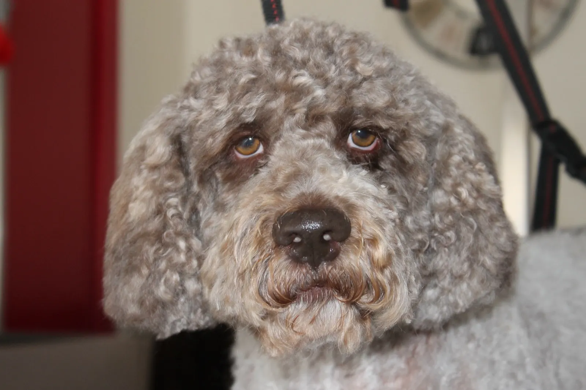
1erlibre‑service
de Dijon
- Libre-service depuis juin 2015
- Bain, tonte, coupe, épilation
- Mardi au vendredi, 9 h à 17 h 30 non-stop
- Stationnement non payant
Le premier libre-service de Dijon, ouvert depuis juin 2015.
Une salle adaptée rien que pour vous et du matériel professionnel, pour entretenir votre chien vous-même dans un salon chaleureux. Besoin d'un conseil ? Vous n'êtes pas seul, je suis là pour vous renseigner.
- Votre chien rentre de promenade un peu boueux ?
- Un entretien entre deux toilettages ?
- Mal au dos, pas envie de vous agenouiller ?
- Envie de maîtriser votre budget toilettage ?
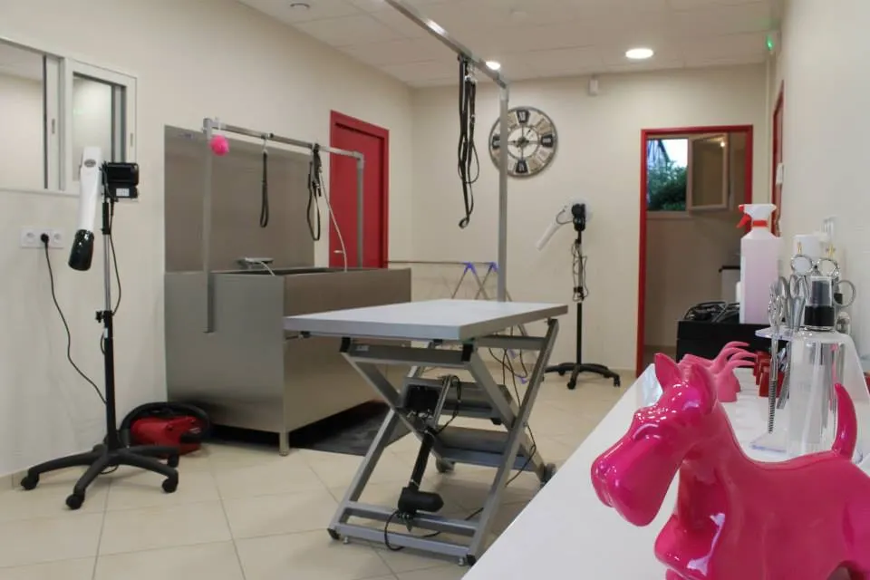
Vous arrivez avec votre chien, tout le reste est sur place.
- Un shampoing haut de gamme vous est offert
- Baignoire, séchoir, table et brosse à disposition
- Matériel professionnel pour chiens de toutes tailles
- Blouse jetable fournie
- Coupe des griffes gratuite
- Toutes les races sont acceptées
Pensez à votre serviette. Pour une question d'hygiène, elle n'est pas fournie, mais vous pouvez en acheter une en microfibre au salon, de 5 à 10 € selon la taille.
Tarifs au forfait horaire selon la taille de votre chien. La prise de rendez-vous est fortement conseillée. Je reste disponible pour vous guider dans l'utilisation du matériel et vous conseiller sur l'entretien de sa fourrure.
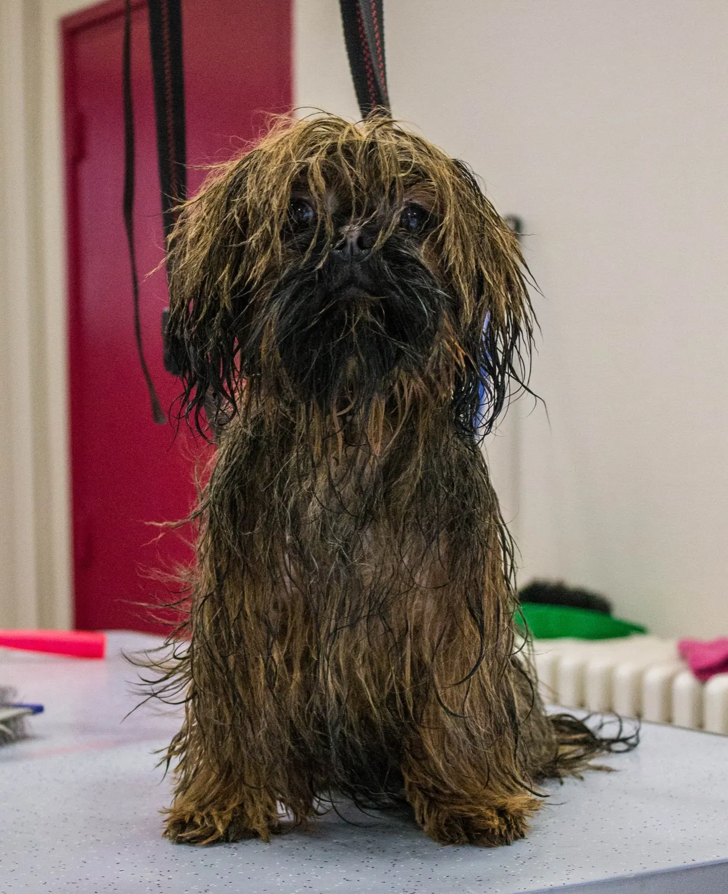
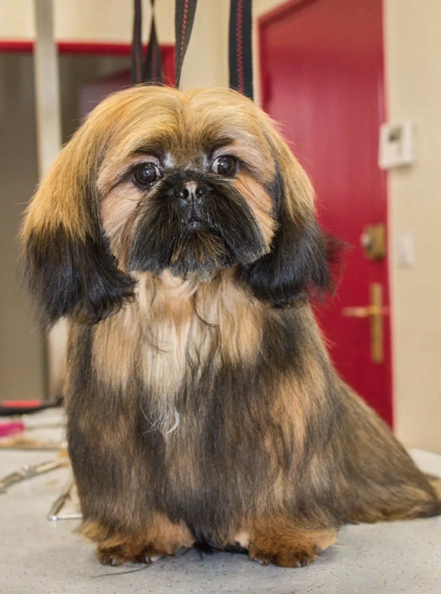
Le toilettage par votre toiletteuse.
Dès votre arrivée, on confirme ensemble le toilettage à faire et vous savez exactement le temps qu'il me faudra. Vous pouvez attendre dans la salle d'attente, en vitrine du salon, ou revenir chercher votre chien.
- Démêlage ou tonteAvec des soins qui facilitent le démêlage. Pour les chiens en épilation, toujours avant le bain.
- Le bainUn shampoing soin adapté à son type de poil, puis un soin selon les besoins de sa fourrure.
- Séchage et brushingPour éliminer les nœuds éventuels.
- Coupe ou tonte de finitionEt la coupe des griffes si besoin.
- La petite touche finaleSi vous le souhaitez, une note de parfum spécial animaux avant de le récupérer.
Le toilettage comprend le bain, un soin ou masque haute cosmétique, la coupe, tonte ou épilation, le dégagement des coussinets, le retrait en douceur des poils du conduit de l'oreille et la coupe des griffes. Les tarifs varient selon le toilettage et la race : voir les tarifs.
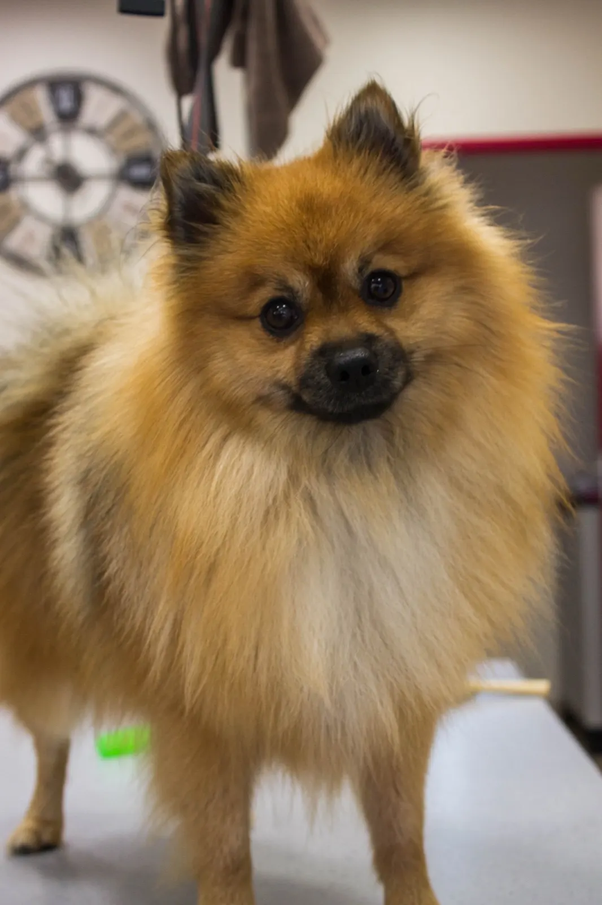
La cosmétique au service de votre chien.
Poils secs, feutrés, gras, mue abondante, pellicules, grattage, alopécie ?
Que votre chien ait un problème ou non, une solution adaptée lui est apportée : shampoing et soin systématiques. Au besoin, un protocole prémasque, shampoing et soin peut être mis en place pour restaurer une bonne santé à sa peau et à sa fourrure.
- IV Saint Bernard
- Puppy
- Artéro
- Spécial One
Besoin d'éduquer votre chien ? Décidons ensemble d'un programme.
Aucune méthode miracle n'existe, mais un ensemble de méthodes adaptées au tempérament de votre chien. Je travaille grâce au jeu et à la récompense émotionnelle, la clé de la réussite, pour trouver l'harmonie et la complicité entre vous.
- 1 h 30
- Le premier rendez-vous, parfois plus, pour évaluer le travail à accomplir. Il est facturé 60 €, déplacement en sus selon la distance.
- Sur mesure
- Vous repartez en sachant le nombre de séances et le prix du programme. Les séances se font à domicile, en ville ou en terrain neutre.
J'ai découvert l'éducation en 2004 dans une association de travail à l'eau et de sauvetage aquatique avec Uranis, ma chienne terre-neuve. Formation d'éducateur canin et conseiller cynotechnicien en 2012, certificat « Chiens difficiles et troubles du comportement », puis six mois auprès d'un toiletteur expérimenté en 2014 pour ouvrir le salon.
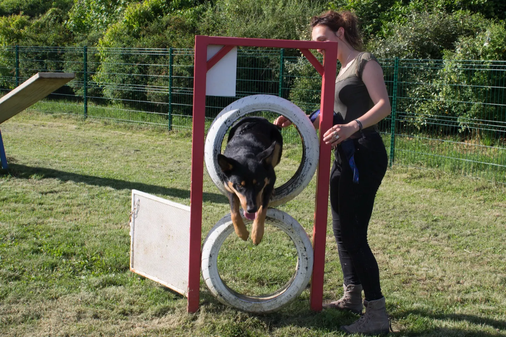
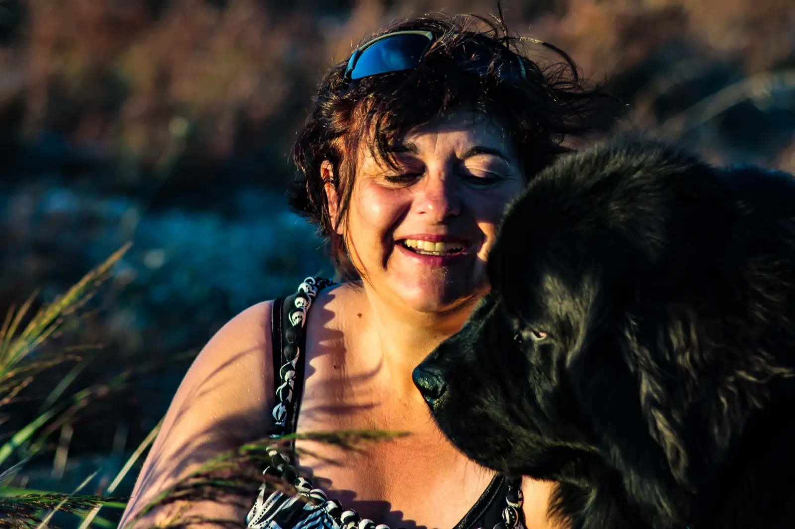
Passés sur la table du salon.
Toute la galerie du salon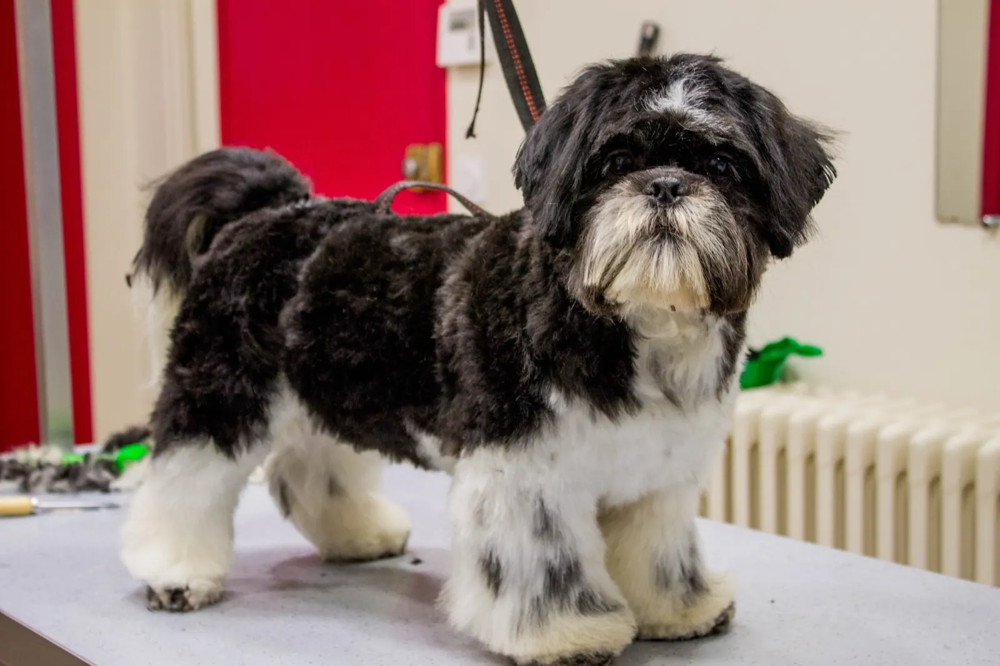
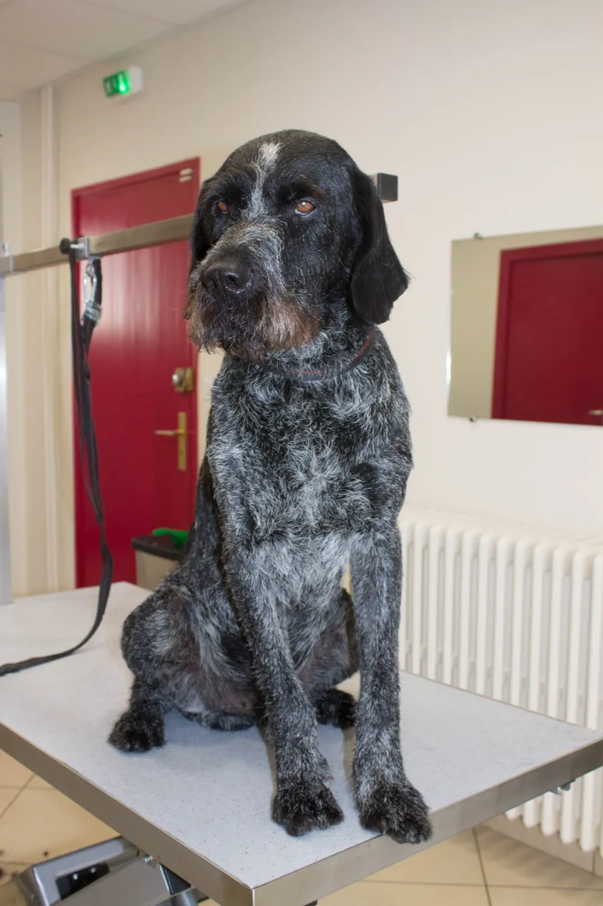
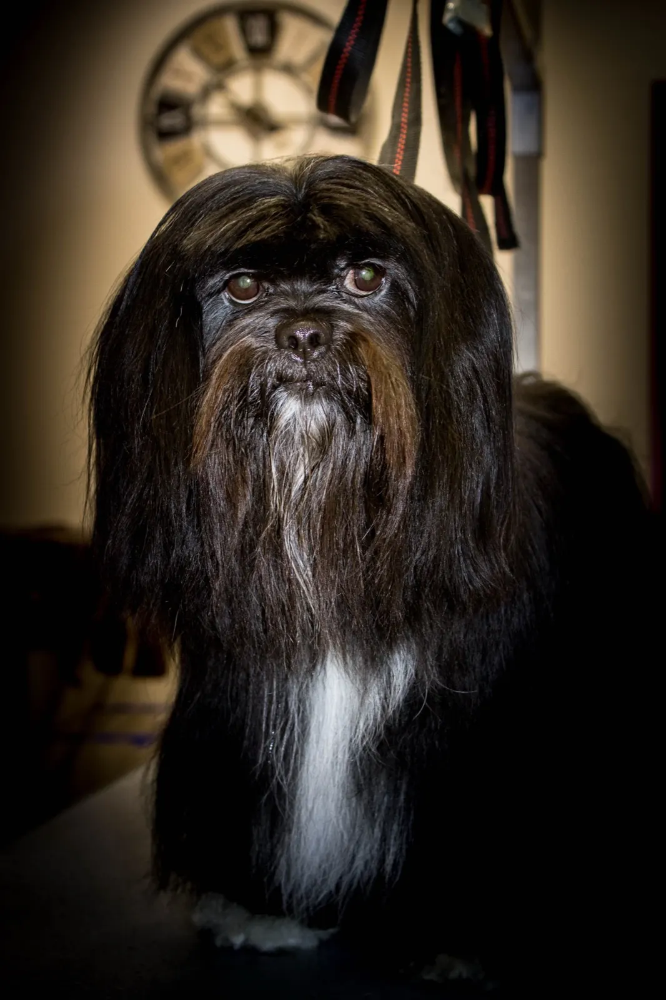
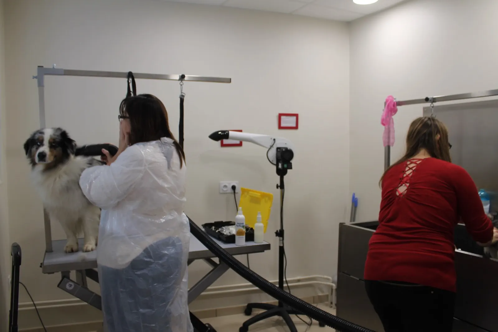
Les horaires du salon.
| Mardi au vendredi | 9 h – 17 h 30sans interruption |
|---|---|
| Samedi | 14 h – 18 h |
| Lundi | Selon la demande |
| Éducation canine | Sur rendez-vous |
Les rendez-vous de toilettage se prennent au salon ou par téléphone, au 03 80 19 85 05.
Venir au salon
- Adresse
- 135 rue d'Auxonne, 21000 Dijon
Stationnement non payant - Toilettage et libre-service
- 03 80 19 85 05
- Éducation canine
- 06 21 65 81 52
- isy-dog@orange.fr
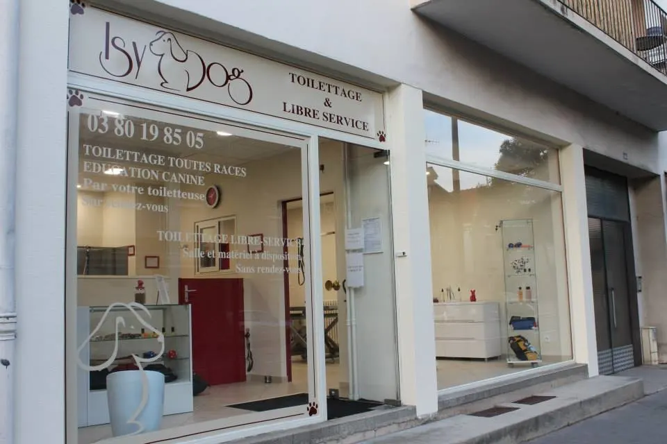